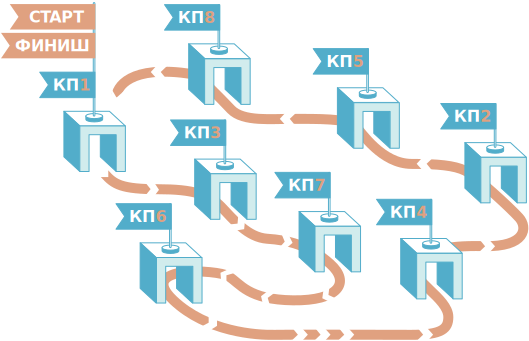
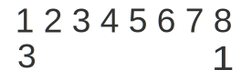
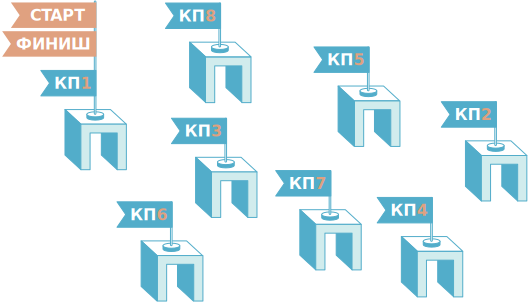

<!doctype html>
<html lang="ru">

<head>
    <meta charset="utf-8" />
    <meta name="viewport" content="width=960">
    <title>Task</title>

    <link href="https://childrenscience.ru/apps/tasks/_framework/libs.min.css" rel="stylesheet" type="text/css">
    <link href="https://childrenscience.ru/apps/tasks/_framework/style.css" rel="stylesheet" type="text/css">

    <link href="./style.css" rel="stylesheet" type="text/css">

    <script type="text/javascript" src="https://childrenscience.ru/apps/tasks/_framework/libs.min.js"></script>
    <script type="text/javascript" src="https://childrenscience.ru/apps/tasks/_framework/index.js"></script>

    <script type="text/javascript">
        globalVars.currentTask = 1;

        var task = [
            // step 1 //////////////////////////////////////////////////////////////////
            {},
            {
                "nextStepDelay": 800,
                "button": true,

                "test_help": {
                    "help_message": "Проследите, какой номер КП переходит в какой на маршруте Дениса"
                },

                "test_images":
                    [
                        {
                            "classes": "task_description",
                            "value": "Задача"
                        },

                        {
                            "classes": "step-description",
                            "value": "На соревнованиях по спортивному ориентированию Денис прошел все контрольные пункты (КП) в порядке, показанном на рисунке.\nЗапишите в виде перестановки порядок следования номеров КП в маршруте Дениса.",
                        },
                        {
                            "classes": "__image1",
                            "value": ""
                        },
                        {
                            "classes": "__image2",
                            "value": ""
                        },
                        {
                            "classes": "__image3",
                            "value": ""
                        },
                        {
                            "classes": "__image4",
                            "value": ""
                        },

                    ],

                "test_drag_n_drop": {
                    "emptyCheck": true,
                    "stackMode": false,

                    "draggables": [
                        {},
                        { "value": "2" },
                        { "value": "4" },
                        { "value": "5" },
                        { "value": "6" },
                        { "value": "7" },
                        { "value": "8" }
                    ],

                    "droppables": [
                        {},
                        { "values": "5" },
                        { "values": "7" },
                        { "values": "2" },
                        { "values": "8" },
                        { "values": "4" },
                        { "values": "6" },
                    ]
                }

            },
            {
                "nextStepDelay": 800,
                "button": true,

                "test_help": {
                    "help_message": "Проследите, какой номер КП переходит в какой на маршруте Дениса"
                },
                "test_images":
                    [
                        {
                            "classes": "task_description",
                            "value": "Задача"
                        },

                        {
                            "classes": "step-description",
                            "value": "Сколько всего существует различных способов построить маршрут через все КП, начав и закончив КП1?",
                        },
                        {
                            "classes": "__image1",
                            "value": ""
                        },

                    ],

                "test_clickable":
                    [
                        {
                            "multiselect": false,
                            "autocheck": false,
                            "classes": "clickable_orange"
                        },
                        {
                            "value": "8!",
                            "right": false
                        },
                        {
                            "value": "7!",
                            "right": true
                        },
                        {
                            "value": "6!",
                            "right": false
                        },
                        {
                            "value": "Другой ответ",
                            "right": false
                        },
                    ]
            },
        ];
    </script>
</head>

<body>
</body>

</html>